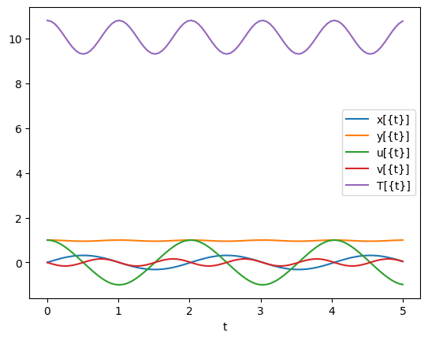
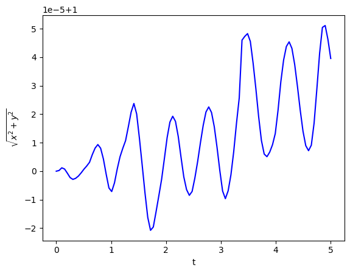
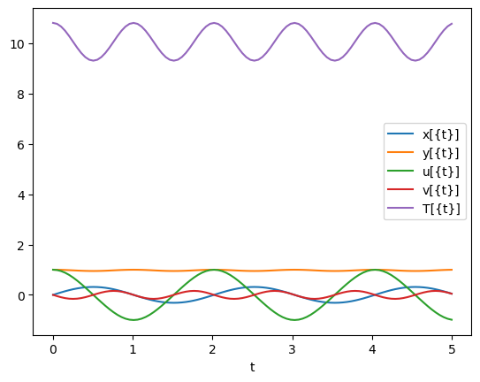
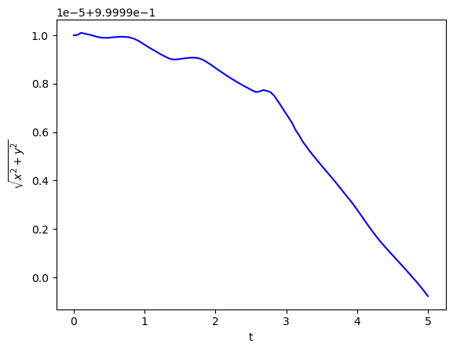

Dynamic Optimization: Differential Algebraic Equations (DAEs)
Contents
2.5. Dynamic Optimization: Differential Algebraic Equations (DAEs)#
import sys
if "google.colab" in sys.modules:
!wget "https://raw.githubusercontent.com/ndcbe/CBE60499/main/notebooks/helper.py"
import helper
!pip install casadi
helper.install_idaes()
#helper.install_ipopt()
else:
import idaes # loads Ipopt with HSL
2.5.1. Dynamic Optimization Overview#
Chapter 8: Dynamic Optimization Introduction (Biegler, 2010)
Chemical engineering examples
Classical (variational) approaches including Hamiltonian and Euler-Lagrange equations
DAE background (this notebook)
Chapter 9: Sequential Methods (Biegler, 2010)
DAE integration (this notebook, next notebook)
Single Shooting
Multiple Shooting
Chapter 10: Simultaneous Methods (Biegler, 2010)
Gauss quadrature (next notebook)
Orthogonal collocation on finite elements (next notebook, next next notebook)
Examples, benchmarks, and large-scale extensions


2.5.2. DAE and DAE Index Reduction#
Excerpts from Chapter 8 of Biegler (2010).


2.5.2.1. Classical DAE form interpretation#
A classical fully implicit set of DAE form is:

They are expressed with respect to an independnet variable, \(t\), which usually is time or distance. Other variables include:
\(x(t)\): state variables, functions of time
\(u(t)\): control variables, functions of time
\(p\): variables, independent of \(t\)
This fully implicit DAE is more difficult to analyze, we can partition the state variables \(x(t)\) into differential variables \(z(t)\) and algebraic variables \(y(t)\), leading to the semiexplicit form:

where:
\(f\): diffenrential equations
\(g\): algebraic equations
\(y(t)\) can be solved uniquely from algebraic equations. It can be implicitly eliminated, so that the DAE can have the same solution as the related ordinary differential equation (ODE):

2.5.3. DAE Formulations for Simple Pendulum Example#
Pyomo.dae documentation:
Pendulum example:
CasADi (need to integrate DAEs):
For local installation:
pip install casadi. Warning: installingCasADiwithcondawill install an “okay” version of Ipopt. If you really want to installCasADiwithconda, you’ll likely need to addimport idaesto your notebook to load the “good” version of Ipopt (Linux and Windows users).
DAE simulation example:
2.5.3.1. Pendulum model and index reduction#

Following Algorithm 8.1, reduce the index of this problem:


## Load libraries
from pyomo.environ import *
from pyomo.dae import *
from pyomo.dae.simulator import Simulator
import matplotlib.pyplot as plt
import numpy as np
## Define function for plotting results
def plot_results(sim, tsim, profiles):
'''
time = list(m.t)
x = [value(m.x[t]) for t in m.t]
y = [value(m.y[t]) for t in m.t]
plt.plot(time, x, '-b', label='x')
plt.plot(time, y, '-r', label='y')
plt.xlabel('Time')
plt.ylabel('Position')
plt.legend(loc='best')
plt.show()
'''
plt.figure(1)
varorder = sim.get_variable_order()
algorder = sim.get_variable_order(vartype='algebraic')
# Create empty dictionary
results = {}
for idx1, v in enumerate(varorder):
i = idx1
v_ = str(v)
results[v_] = profiles[:, i]
plt.plot(tsim, results[v_], label=v)
for idx2, v in enumerate(algorder):
i = len(varorder) + idx2
v_ = str(v)
results[v_] = profiles[:, i]
plt.plot(tsim, results[v_], label=v)
plt.xlabel('t')
plt.legend(loc='best')
plt.show()
plt.figure(2)
x_ = results['x[{t}]']
y_ = results['y[{t}]']
plt.plot(tsim, np.sqrt(x_**2 + y_**2), '-b', label='length')
plt.xlabel('t')
plt.ylabel('$\sqrt{x^2 + y^2}$')
plt.show()
#return results
2.5.3.2. Formulation 1: Index-3 DAE#
Consider the following model:
This assumes mass and length of unity.
def create_model_index3():
m = ConcreteModel()
# Declare time
m.t = ContinuousSet(bounds=(0.0, 1))
# Declare parameter - acceleration due to gravity
m.g = Param(initialize=9.81) # m/s^2
# Declare variables indexed over time
m.x = Var(m.t) # horizontal position
m.y = Var(m.t) # vertical position
m.u = Var(m.t) # horizontal velocity
m.v = Var(m.t) # vertical velocity
m.T = Var(m.t) # tension
# Declare derivative variables
m.dx = DerivativeVar(m.x) # with respect to t is implied
m.dy = DerivativeVar(m.y)
m.du = DerivativeVar(m.u)
m.dv = DerivativeVar(m.v)
# Declare differential equations
def _dx_eqn(m, t):
return m.dx[t] == m.u[t]
m.dx_eqn = Constraint(m.t, rule=_dx_eqn)
def _dy_eqn(m, t):
return m.dy[t] == m.v[t]
m.dy_eqn = Constraint(m.t, rule=_dy_eqn)
def _du_eqn(m, t):
return m.du[t] == -m.T[t]*m.x[t]
m.du_eqn = Constraint(m.t, rule=_du_eqn)
def _dv_eqn(m, t):
return m.dv[t] == m.g -m.T[t]*m.y[t]
m.dv_eqn = Constraint(m.t, rule=_dv_eqn)
# Declare algebraic equation
def _alg_eqn(m, t):
return m.x[t]**2 + m.y[t]**2 == 1
m.alg_eqn = Constraint(m.t, rule=_alg_eqn)
# Specify initial conditions
m.x[0] = 0
m.y[0] = 1
m.u[0] = 1
m.v[0] = 0
m.T[0] = 1 + m.g
return m
index3 = create_model_index3()
# Specify integrator options
int_ops = {'print_stats':True,"abstol":1E-8,"reltol":1E-6}
# Solve DAEs
sim = Simulator(index3, package='casadi')
tsim, profiles = sim.simulate(numpoints=100, integrator='idas',integrator_options=int_ops)
# Plot solution
plot_results(sim, tsim, profiles)
psetup failed: .../casadi/interfaces/sundials/idas_interface.cpp:852: Linear solve failed
psetup failed: .../casadi/interfaces/sundials/idas_interface.cpp:852: Linear solve failed
psetup failed: .../casadi/interfaces/sundials/idas_interface.cpp:852: Linear solve failed
psetup failed: .../casadi/interfaces/sundials/idas_interface.cpp:852: Linear solve failed
psetup failed: .../casadi/interfaces/sundials/idas_interface.cpp:852: Linear solve failed
psetup failed: .../casadi/interfaces/sundials/idas_interface.cpp:852: Linear solve failed
psetup failed: .../casadi/interfaces/sundials/idas_interface.cpp:852: Linear solve failed
psetup failed: .../casadi/interfaces/sundials/idas_interface.cpp:852: Linear solve failed
psetup failed: .../casadi/interfaces/sundials/idas_interface.cpp:852: Linear solve failed
psetup failed: .../casadi/interfaces/sundials/idas_interface.cpp:852: Linear solve failed
At t = 0 and h = 1.06624e-14, the corrector convergence failed repeatedly or with |h| = hmin.
---------------------------------------------------------------------------
RuntimeError Traceback (most recent call last)
Cell In [3], line 62
60 # Solve DAEs
61 sim = Simulator(index3, package='casadi')
---> 62 tsim, profiles = sim.simulate(numpoints=100, integrator='idas',integrator_options=int_ops)
64 # Plot solution
65 plot_results(sim, tsim, profiles)
File ~/opt/anaconda3/envs/idaes/lib/python3.10/site-packages/pyomo/dae/simulator.py:884, in Simulator.simulate(self, numpoints, tstep, integrator, varying_inputs, initcon, integrator_options)
877 tsim, profile = \
878 self._simulate_with_casadi_with_inputs(initcon, tsim,
879 varying_inputs,
880 integrator,
881 integrator_options)
882 else:
883 tsim, profile = \
--> 884 self._simulate_with_casadi_no_inputs(initcon, tsim,
885 integrator,
886 integrator_options)
888 self._tsim = tsim
889 self._simsolution = profile
File ~/opt/anaconda3/envs/idaes/lib/python3.10/site-packages/pyomo/dae/simulator.py:945, in Simulator._simulate_with_casadi_no_inputs(self, initcon, tsim, integrator, integrator_options)
943 integrator_options['output_t0'] = True
944 F = casadi.integrator('F', integrator, dae, integrator_options)
--> 945 sol = F(x0=initcon)
946 profile = sol['xf'].full().T
948 if len(self._algvars) != 0:
File ~/opt/anaconda3/envs/idaes/lib/python3.10/site-packages/casadi/casadi.py:7772, in Function.__call__(self, *args, **kwargs)
7769 return tuple(ret)
7770 else:
7771 # Named inputs -> return dictionary
-> 7772 return self.call(kwargs)
File ~/opt/anaconda3/envs/idaes/lib/python3.10/site-packages/casadi/casadi.py:6945, in Function.call(self, *args)
6922 def call(self, *args):
6923 r"""
6924 call(Function self, std::vector< casadi::DM,std::allocator< casadi::DM > > const & arg, bool always_inline=False, bool never_inline=False)
6925 call(Function self, std::vector< casadi::SX,std::allocator< casadi::SX > > const & arg, bool always_inline=False, bool never_inline=False)
(...)
6943
6944 """
-> 6945 return _casadi.Function_call(self, *args)
RuntimeError: .../casadi/interfaces/sundials/idas_interface.cpp:591: IDASolve returned "IDA_CONV_FAIL". Consult IDAS documentation.
Warning: If you run this notebook in Colab, you may get the following runtime error and your kernel may crash:


Why did the IDAS integrator in SUNDIALS fail? It is only meant for index 0 or 1 DAEs! Integrating high index DAEs is really hard!
2.5.3.3. Formulation 2: Pure ODE Model#
def create_model_ode():
m = ConcreteModel()
# Declare time
m.t = ContinuousSet(bounds=(0.0, 5.0))
# Declare parameter - acceleration due to gravity
m.g = Param(initialize=9.81) # m/s^2
# Declare variables indexed over time
m.x = Var(m.t) # horizontal position
m.y = Var(m.t) # vertical position
m.u = Var(m.t) # horizontal velocity
m.v = Var(m.t) # vertical velocity
m.T = Var(m.t) # tension
# Declare derivative variables
m.dx = DerivativeVar(m.x) # with respect to t is implied
m.dy = DerivativeVar(m.y)
m.du = DerivativeVar(m.u)
m.dv = DerivativeVar(m.v)
m.dT = DerivativeVar(m.T)
# Declare differential equations
def _dx_eqn(m, t):
return m.dx[t] == m.u[t]
m.dx_eqn = Constraint(m.t, rule=_dx_eqn)
def _dy_eqn(m, t):
return m.dy[t] == m.v[t]
m.dy_eqn = Constraint(m.t, rule=_dy_eqn)
def _du_eqn(m, t):
return m.du[t] == -m.T[t]*m.x[t]
m.du_eqn = Constraint(m.t, rule=_du_eqn)
def _dv_eqn(m, t):
return m.dv[t] == m.g -m.T[t]*m.y[t]
m.dv_eqn = Constraint(m.t, rule=_dv_eqn)
def _dT_eqn(m, t):
return m.dT[t] == 4*m.T[t]*(m.x[t]*m.u[t] + m.y[t]*m.v[t]) + 3*m.g*m.v[t]
m.dT_eqn = Constraint(m.t, rule=_dT_eqn)
# Specify initial conditions
m.x[0] = 0
m.y[0] = 1
m.u[0] = 1
m.v[0] = 0
m.T[0] = 1 + m.g
return m
ode = create_model_ode()
# Specify integrator options
int_ops = {'print_stats':True,"abstol":1E-6,"reltol":1E-4}
# Solve DAEs
sim = Simulator(ode, package='casadi')
tsim, profiles = sim.simulate(numpoints=100, integrator='idas',integrator_options=int_ops)
# Plot solution
results = plot_results(sim, tsim, profiles)
FORWARD INTEGRATION:
Number of steps taken by SUNDIALS: 167
Number of calls to the user’s f function: 242
Number of calls made to the linear solver setup function: 31
Number of error test failures: 7
Method order used on the last internal step: 5
Method order to be used on the next internal step: 5
Actual value of initial step size: 7.90569e-07
Step size taken on the last internal step: 0.00246466
Step size to be attempted on the next internal step: 0.00492933
Current internal time reached: 0.00492933
Number of nonlinear iterations performed: 240
Number of nonlinear convergence failures: 0


Discussion
Are all of the algebraic constraints in the original formulation satisfied?
2.5.3.4. Formulation 3: Index-1 DAE Model#
(This reformulation is NOT unique… could have written \(\frac{dx}{dt}\) and \(\frac{du}{dt}\) instead.)
Consistent initial conditions:
Specify \(y(0)\) and \(v(0)\).
Solve for \(x(0)\), \(u(0)\), and \(T(0)\)
def create_model_index1():
m = ConcreteModel()
# Declare time
m.t = ContinuousSet(bounds=(0, 5))
# Declare parameter - acceleration due to gravity
m.g = Param(initialize=9.81) # m/s^2
# Declare variables indexed over time
m.x = Var(m.t) # horizontal position
m.y = Var(m.t) # vertical position
m.u = Var(m.t) # horizontal velocity
m.v = Var(m.t) # vertical velocity
m.T = Var(m.t) # tension
# Declare derivative variables
m.dy = DerivativeVar(m.y)
m.dv = DerivativeVar(m.v)
# Declare differential equations
def _dy_eqn(m, t):
return m.dy[t] == m.v[t]
m.dy_eqn = Constraint(m.t, rule=_dy_eqn)
def _dv_eqn(m, t):
return m.dv[t] == m.g - m.T[t]*m.y[t]
m.dv_eqn = Constraint(m.t, rule=_dv_eqn)
# Declare algebraic equations
def _alg_eqn1(m, t):
return m.x[t]**2 + m.y[t]**2 == 1
m.alg_eqn1 = Constraint(m.t, rule=_alg_eqn1)
def _alg_eqn2(m, t):
return m.x[t]*m.u[t] + m.y[t]*m.v[t] == 0
m.alg_eqn2 = Constraint(m.t, rule=_alg_eqn2)
def _alg_eqn3(m, t):
return m.u[t]**2 + m.v[t]**2 - m.T[t]*(m.x[t]**2 + m.y[t]**2) + m.g*m.y[t] == 0
m.alg_eqn3 = Constraint(m.t, rule=_alg_eqn3)
# Specify initial conditions
m.x[0] = 0
m.y[0] = 1
m.u[0] = 1
m.v[0] = 0
m.T[0] = 1 + m.g
return m
def index1_check_constraints(m):
""" Check if the three constraints are feasible.
"""
print("Constraint 1:")
r1 = m.x[0]()**2 + m.y[0]()**2 - 1
print(r1)
print("\nConstraint 2:")
r2 = m.x[0]()*m.u[0]() + m.y[0]()*m.v[0]()
print(r2)
print("\nConstraint 3:")
r3 = m.u[0]()**2 + m.v[0]()**2 - m.T[0]() + m.g*m.y[0]()
print(r3)
index1 = create_model_index1()
# Check initial condition
index1_check_constraints(index1)
# Specify integrator options
int_ops = {'print_stats':True,"abstol":1E-6,"reltol":1E-4}
# Solve DAEs
sim = Simulator(index1, package='casadi')
tsim, profiles = sim.simulate(numpoints=100, integrator='idas',integrator_options=int_ops)
# tsim, profiles = sim.simulate(numpoints=100, integrator='collocation')
Constraint 1:
0
Constraint 2:
0
Constraint 3:
0.0
psetup failed: .../casadi/interfaces/sundials/idas_interface.cpp:852: Linear solve failed
psetup failed: .../casadi/interfaces/sundials/idas_interface.cpp:852: Linear solve failed
psetup failed: .../casadi/interfaces/sundials/idas_interface.cpp:852: Linear solve failed
psetup failed: .../casadi/interfaces/sundials/idas_interface.cpp:852: Linear solve failed
psetup failed: .../casadi/interfaces/sundials/idas_interface.cpp:852: Linear solve failed
The residual routine or the linear setup or solve routine had a recoverable error, but IDACalcIC was unable to recover.
---------------------------------------------------------------------------
RuntimeError Traceback (most recent call last)
Cell In [5], line 79
77 # Solve DAEs
78 sim = Simulator(index1, package='casadi')
---> 79 tsim, profiles = sim.simulate(numpoints=100, integrator='idas',integrator_options=int_ops)
File ~/opt/anaconda3/envs/idaes/lib/python3.10/site-packages/pyomo/dae/simulator.py:884, in Simulator.simulate(self, numpoints, tstep, integrator, varying_inputs, initcon, integrator_options)
877 tsim, profile = \
878 self._simulate_with_casadi_with_inputs(initcon, tsim,
879 varying_inputs,
880 integrator,
881 integrator_options)
882 else:
883 tsim, profile = \
--> 884 self._simulate_with_casadi_no_inputs(initcon, tsim,
885 integrator,
886 integrator_options)
888 self._tsim = tsim
889 self._simsolution = profile
File ~/opt/anaconda3/envs/idaes/lib/python3.10/site-packages/pyomo/dae/simulator.py:945, in Simulator._simulate_with_casadi_no_inputs(self, initcon, tsim, integrator, integrator_options)
943 integrator_options['output_t0'] = True
944 F = casadi.integrator('F', integrator, dae, integrator_options)
--> 945 sol = F(x0=initcon)
946 profile = sol['xf'].full().T
948 if len(self._algvars) != 0:
File ~/opt/anaconda3/envs/idaes/lib/python3.10/site-packages/casadi/casadi.py:7772, in Function.__call__(self, *args, **kwargs)
7769 return tuple(ret)
7770 else:
7771 # Named inputs -> return dictionary
-> 7772 return self.call(kwargs)
File ~/opt/anaconda3/envs/idaes/lib/python3.10/site-packages/casadi/casadi.py:6945, in Function.call(self, *args)
6922 def call(self, *args):
6923 r"""
6924 call(Function self, std::vector< casadi::DM,std::allocator< casadi::DM > > const & arg, bool always_inline=False, bool never_inline=False)
6925 call(Function self, std::vector< casadi::SX,std::allocator< casadi::SX > > const & arg, bool always_inline=False, bool never_inline=False)
(...)
6943
6944 """
-> 6945 return _casadi.Function_call(self, *args)
RuntimeError: .../casadi/interfaces/sundials/idas_interface.cpp:591: IDACalcIC returned "IDA_NO_RECOVERY". Consult IDAS documentation.
What happened? Point singularity at \(x=0\).
Let’s try \(x=0.1\) as the initial point.
index1_again = create_model_index1()
# Specify alternative initial conditions
small_number = 0.1
index1_again.x[0] = small_number
index1_again.y[0] = 1
index1_again.u[0] = 1
index1_again.v[0] = 0
index1_again.T[0] = 1 + index1_again.g
# Check initial condition
index1_check_constraints(index1_again)
# Solve DAEs
sim = Simulator(index1_again, package='casadi')
# Simulator
tsim, profiles = sim.simulate(numpoints=100, integrator='idas',integrator_options=int_ops)
Constraint 1:
0.010000000000000009
Constraint 2:
0.1
Constraint 3:
0.0
psetup failed: .../casadi/interfaces/sundials/idas_interface.cpp:852: Linear solve failed
psetup failed: .../casadi/interfaces/sundials/idas_interface.cpp:852: Linear solve failed
psetup failed: .../casadi/interfaces/sundials/idas_interface.cpp:852: Linear solve failed
psetup failed: .../casadi/interfaces/sundials/idas_interface.cpp:852: Linear solve failed
psetup failed: .../casadi/interfaces/sundials/idas_interface.cpp:852: Linear solve failed
The residual routine or the linear setup or solve routine had a recoverable error, but IDACalcIC was unable to recover.
---------------------------------------------------------------------------
RuntimeError Traceback (most recent call last)
Cell In [6], line 19
16 sim = Simulator(index1_again, package='casadi')
18 # Simulator
---> 19 tsim, profiles = sim.simulate(numpoints=100, integrator='idas',integrator_options=int_ops)
File ~/opt/anaconda3/envs/idaes/lib/python3.10/site-packages/pyomo/dae/simulator.py:884, in Simulator.simulate(self, numpoints, tstep, integrator, varying_inputs, initcon, integrator_options)
877 tsim, profile = \
878 self._simulate_with_casadi_with_inputs(initcon, tsim,
879 varying_inputs,
880 integrator,
881 integrator_options)
882 else:
883 tsim, profile = \
--> 884 self._simulate_with_casadi_no_inputs(initcon, tsim,
885 integrator,
886 integrator_options)
888 self._tsim = tsim
889 self._simsolution = profile
File ~/opt/anaconda3/envs/idaes/lib/python3.10/site-packages/pyomo/dae/simulator.py:945, in Simulator._simulate_with_casadi_no_inputs(self, initcon, tsim, integrator, integrator_options)
943 integrator_options['output_t0'] = True
944 F = casadi.integrator('F', integrator, dae, integrator_options)
--> 945 sol = F(x0=initcon)
946 profile = sol['xf'].full().T
948 if len(self._algvars) != 0:
File ~/opt/anaconda3/envs/idaes/lib/python3.10/site-packages/casadi/casadi.py:7772, in Function.__call__(self, *args, **kwargs)
7769 return tuple(ret)
7770 else:
7771 # Named inputs -> return dictionary
-> 7772 return self.call(kwargs)
File ~/opt/anaconda3/envs/idaes/lib/python3.10/site-packages/casadi/casadi.py:6945, in Function.call(self, *args)
6922 def call(self, *args):
6923 r"""
6924 call(Function self, std::vector< casadi::DM,std::allocator< casadi::DM > > const & arg, bool always_inline=False, bool never_inline=False)
6925 call(Function self, std::vector< casadi::SX,std::allocator< casadi::SX > > const & arg, bool always_inline=False, bool never_inline=False)
(...)
6943
6944 """
-> 6945 return _casadi.Function_call(self, *args)
RuntimeError: .../casadi/interfaces/sundials/idas_interface.cpp:591: IDACalcIC returned "IDA_NO_RECOVERY". Consult IDAS documentation.
Our initial point does not satisfy the algebraic constraints! We need a consistent initial point.
Given \(x = \epsilon\), solve \(x^2 + y^2 = 1\) for \(y\):
Then, assume \(u = 1\) and solve \(2 x u + 2 y v = 0\) for \(v\):
Finally, we can solve \((u^2 + v^2) - T (x^2 + y^2) + g y = 0\) for \(T\):
index1_take_two = create_model_index1()
# Specify alternative initial conditions
small_number = 0.1
index1_take_two.x[0] = small_number
index1_take_two.y[0] = np.sqrt(1 - small_number**2)
index1_take_two.u[0] = 1
index1_take_two.v[0] = -index1_take_two.x[0]()*index1_take_two.u[0]()/index1_take_two.y[0]()
index1_take_two.T[0] = (index1_take_two.u[0]()**2 + index1_take_two.v[0]()**2
+ index1_take_two.g*index1_take_two.y[0]())
# Check initial condition
index1_check_constraints(index1_take_two)
# Solve DAEs
sim = Simulator(index1_take_two, package='casadi')
# Specify integrator options
int_ops2 = {'print_stats':True,"abstol":1E-6,"reltol":1E-4,
"verbose":False,"calc_ic":True}
# Simulator
tsim, profiles = sim.simulate(numpoints=20, integrator='idas',integrator_options=int_ops2)
Constraint 1:
0.0
Constraint 2:
0.0
Constraint 3:
0.0
psetup failed: .../casadi/interfaces/sundials/idas_interface.cpp:852: Linear solve failed
psetup failed: .../casadi/interfaces/sundials/idas_interface.cpp:852: Linear solve failed
psetup failed: .../casadi/interfaces/sundials/idas_interface.cpp:852: Linear solve failed
psetup failed: .../casadi/interfaces/sundials/idas_interface.cpp:852: Linear solve failed
psetup failed: .../casadi/interfaces/sundials/idas_interface.cpp:852: Linear solve failed
The residual routine or the linear setup or solve routine had a recoverable error, but IDACalcIC was unable to recover.
---------------------------------------------------------------------------
RuntimeError Traceback (most recent call last)
Cell In [7], line 24
20 int_ops2 = {'print_stats':True,"abstol":1E-6,"reltol":1E-4,
21 "verbose":False,"calc_ic":True}
23 # Simulator
---> 24 tsim, profiles = sim.simulate(numpoints=20, integrator='idas',integrator_options=int_ops2)
File ~/opt/anaconda3/envs/idaes/lib/python3.10/site-packages/pyomo/dae/simulator.py:884, in Simulator.simulate(self, numpoints, tstep, integrator, varying_inputs, initcon, integrator_options)
877 tsim, profile = \
878 self._simulate_with_casadi_with_inputs(initcon, tsim,
879 varying_inputs,
880 integrator,
881 integrator_options)
882 else:
883 tsim, profile = \
--> 884 self._simulate_with_casadi_no_inputs(initcon, tsim,
885 integrator,
886 integrator_options)
888 self._tsim = tsim
889 self._simsolution = profile
File ~/opt/anaconda3/envs/idaes/lib/python3.10/site-packages/pyomo/dae/simulator.py:945, in Simulator._simulate_with_casadi_no_inputs(self, initcon, tsim, integrator, integrator_options)
943 integrator_options['output_t0'] = True
944 F = casadi.integrator('F', integrator, dae, integrator_options)
--> 945 sol = F(x0=initcon)
946 profile = sol['xf'].full().T
948 if len(self._algvars) != 0:
File ~/opt/anaconda3/envs/idaes/lib/python3.10/site-packages/casadi/casadi.py:7772, in Function.__call__(self, *args, **kwargs)
7769 return tuple(ret)
7770 else:
7771 # Named inputs -> return dictionary
-> 7772 return self.call(kwargs)
File ~/opt/anaconda3/envs/idaes/lib/python3.10/site-packages/casadi/casadi.py:6945, in Function.call(self, *args)
6922 def call(self, *args):
6923 r"""
6924 call(Function self, std::vector< casadi::DM,std::allocator< casadi::DM > > const & arg, bool always_inline=False, bool never_inline=False)
6925 call(Function self, std::vector< casadi::SX,std::allocator< casadi::SX > > const & arg, bool always_inline=False, bool never_inline=False)
(...)
6943
6944 """
-> 6945 return _casadi.Function_call(self, *args)
RuntimeError: .../casadi/interfaces/sundials/idas_interface.cpp:591: IDACalcIC returned "IDA_NO_RECOVERY". Consult IDAS documentation.
Hmm, this does not make sense. Perhaps there is something subtle wrong with the model.
Let’s try solving the model with Ipopt after discretizing with collocation.
# discretize the model
index1_take_two.Obj = Objective(expr=1) # Add a dummy objective
discretizer = TransformationFactory('dae.collocation')
discretizer.apply_to(index1_take_two,nfe=15,scheme='LAGRANGE-RADAU',ncp=3)
# initialize
for t in index1_take_two.t:
index1_take_two.x[t] = small_number
index1_take_two.y[t] = np.sqrt(1 - small_number**2)
index1_take_two.u[t] = 1
index1_take_two.v[t] = -index1_take_two.x[t]()*index1_take_two.u[t]()/index1_take_two.y[t]()
index1_take_two.T[t] = (index1_take_two.u[t]()**2 + index1_take_two.v[t]()**2
+ index1_take_two.g*index1_take_two.y[t]())
# solve the discretized model
solver = SolverFactory('ipopt')
solver.options['max_iter'] = 300
solver.solve(index1_take_two,tee=True)
Ipopt 3.13.2: max_iter=300
******************************************************************************
This program contains Ipopt, a library for large-scale nonlinear optimization.
Ipopt is released as open source code under the Eclipse Public License (EPL).
For more information visit http://projects.coin-or.org/Ipopt
This version of Ipopt was compiled from source code available at
https://github.com/IDAES/Ipopt as part of the Institute for the Design of
Advanced Energy Systems Process Systems Engineering Framework (IDAES PSE
Framework) Copyright (c) 2018-2019. See https://github.com/IDAES/idaes-pse.
This version of Ipopt was compiled using HSL, a collection of Fortran codes
for large-scale scientific computation. All technical papers, sales and
publicity material resulting from use of the HSL codes within IPOPT must
contain the following acknowledgement:
HSL, a collection of Fortran codes for large-scale scientific
computation. See http://www.hsl.rl.ac.uk.
******************************************************************************
This is Ipopt version 3.13.2, running with linear solver ma27.
Number of nonzeros in equality constraint Jacobian...: 1186
Number of nonzeros in inequality constraint Jacobian.: 0
Number of nonzeros in Lagrangian Hessian.............: 368
Total number of variables............................: 322
variables with only lower bounds: 0
variables with lower and upper bounds: 0
variables with only upper bounds: 0
Total number of equality constraints.................: 320
Total number of inequality constraints...............: 0
inequality constraints with only lower bounds: 0
inequality constraints with lower and upper bounds: 0
inequality constraints with only upper bounds: 0
iter objective inf_pr inf_du lg(mu) ||d|| lg(rg) alpha_du alpha_pr ls
0 1.0000000e+00 9.07e-01 0.00e+00 -1.0 0.00e+00 - 0.00e+00 0.00e+00 0
1 1.0000000e+00 3.29e-01 1.89e-04 -1.7 1.14e+00 -4.0 1.00e+00 1.00e+00h 1
2 1.0000000e+00 1.72e-01 8.57e-04 -1.7 4.16e-01 -3.6 1.00e+00 1.00e+00h 1
3 1.0000000e+00 1.72e-01 8.43e-04 -2.5 2.05e+02 -4.1 1.00e+00 2.44e-04h 13
4 1.0000000e+00 8.00e-02 3.19e-04 -2.5 3.03e-01 -3.6 1.00e+00 1.00e+00h 1
5 1.0000000e+00 1.50e-01 1.98e-04 -2.5 6.09e-01 - 1.00e+00 1.00e+00h 1
6 1.0000000e+00 3.53e-02 4.96e-05 -2.5 1.88e-01 - 1.00e+00 1.00e+00h 1
7 1.0000000e+00 8.82e-03 1.24e-05 -2.5 9.41e-02 - 1.00e+00 1.00e+00h 1
8 1.0000000e+00 2.20e-03 3.10e-06 -3.8 4.70e-02 - 1.00e+00 1.00e+00h 1
9 1.0000000e+00 5.51e-04 7.74e-07 -3.8 2.35e-02 - 1.00e+00 1.00e+00h 1
iter objective inf_pr inf_du lg(mu) ||d|| lg(rg) alpha_du alpha_pr ls
10 1.0000000e+00 1.38e-04 1.94e-07 -5.7 1.18e-02 - 1.00e+00 1.00e+00h 1
11 1.0000000e+00 3.45e-05 4.84e-08 -5.7 5.88e-03 - 1.00e+00 1.00e+00h 1
12 1.0000000e+00 8.61e-06 1.21e-08 -5.7 2.94e-03 - 1.00e+00 1.00e+00h 1
13 1.0000000e+00 2.15e-06 3.02e-09 -8.6 1.47e-03 - 1.00e+00 1.00e+00h 1
14 1.0000000e+00 5.38e-07 7.56e-10 -8.6 7.35e-04 - 1.00e+00 1.00e+00h 1
15 1.0000000e+00 1.35e-07 1.89e-10 -8.6 3.67e-04 - 1.00e+00 1.00e+00h 1
16 1.0000000e+00 3.36e-08 4.73e-11 -8.6 1.84e-04 - 1.00e+00 1.00e+00h 1
17 1.0000000e+00 8.41e-09 1.18e-11 -8.6 9.19e-05 - 1.00e+00 1.00e+00h 1
Number of Iterations....: 17
(scaled) (unscaled)
Objective...............: 1.0000000000000000e+00 1.0000000000000000e+00
Dual infeasibility......: 1.1815139891865322e-11 1.1815139891865322e-11
Constraint violation....: 8.4114327569828617e-09 8.4114327569828617e-09
Complementarity.........: 0.0000000000000000e+00 0.0000000000000000e+00
Overall NLP error.......: 8.4114327569828617e-09 8.4114327569828617e-09
Number of objective function evaluations = 30
Number of objective gradient evaluations = 18
Number of equality constraint evaluations = 31
Number of inequality constraint evaluations = 0
Number of equality constraint Jacobian evaluations = 18
Number of inequality constraint Jacobian evaluations = 0
Number of Lagrangian Hessian evaluations = 17
Total CPU secs in IPOPT (w/o function evaluations) = 0.012
Total CPU secs in NLP function evaluations = 0.001
EXIT: Optimal Solution Found.
{'Problem': [{'Lower bound': -inf, 'Upper bound': inf, 'Number of objectives': 1, 'Number of constraints': 320, 'Number of variables': 322, 'Sense': 'unknown'}], 'Solver': [{'Status': 'ok', 'Message': 'Ipopt 3.13.2\\x3a Optimal Solution Found', 'Termination condition': 'optimal', 'Id': 0, 'Error rc': 0, 'Time': 0.03801298141479492}], 'Solution': [OrderedDict([('number of solutions', 0), ('number of solutions displayed', 0)])]}
Take away: There is something strange with formulation 3 that is causing the numeric integrator to fail. We can still solve this problem after discretizing.
2.5.3.5. Formulation 4: Index-1 DAE Model#
Consistent initial conditions:
Specify \(x(0)\), \(u(0)\), \(y(0)\), and \(v(0)\).
Solve for \(T(0)\)
def create_model_index1_b():
m = ConcreteModel()
# Declare time
m.t = ContinuousSet(bounds=(0.0, 5))
# Declare parameter - acceleration due to gravity
m.g = Param(initialize=9.81) # m/s^2
# Declare variables indexed over time
m.x = Var(m.t) # horizontal position
m.y = Var(m.t) # vertical position
m.u = Var(m.t) # horizontal velocity
m.v = Var(m.t) # vertical velocity
m.T = Var(m.t) # tension
# Declare derivative variables
m.dx = DerivativeVar(m.x) # with respect to t is implied
m.dy = DerivativeVar(m.y)
m.du = DerivativeVar(m.u)
m.dv = DerivativeVar(m.v)
# Declare differential equations
def _dx_eqn(m, t):
return m.dx[t] == m.u[t]
m.dx_eqn = Constraint(m.t, rule=_dx_eqn)
def _dy_eqn(m, t):
return m.dy[t] == m.v[t]
m.dy_eqn = Constraint(m.t, rule=_dy_eqn)
def _du_eqn(m, t):
return m.du[t] == -m.T[t]*m.x[t]
m.du_eqn = Constraint(m.t, rule=_du_eqn)
def _dv_eqn(m, t):
return m.dv[t] == m.g -m.T[t]*m.y[t]
m.dv_eqn = Constraint(m.t, rule=_dv_eqn)
def _alg_eqn3(m, t):
return m.u[t]**2 + m.v[t]**2 - m.T[t]*(m.x[t]**2 + m.y[t]**2) + m.g*m.y[t] == 0
m.alg_eqn3 = Constraint(m.t, rule=_alg_eqn3)
# Specify initial conditions
m.x[0] = 0
m.y[0] = 1
m.u[0] = 1
m.v[0] = 0
m.T[0] = 1 + m.g
return m
index1_b = create_model_index1_b()
# Specify integrator options
int_ops = {'print_stats':True,"abstol":1E-8,"reltol":1E-6}
# Solve DAEs
sim = Simulator(index1_b, package='casadi')
tsim, profiles = sim.simulate(numpoints=100, integrator='idas',integrator_options=int_ops)
# Plot solution
plot_results(sim, tsim, profiles)
FORWARD INTEGRATION:
Number of steps taken by SUNDIALS: 379
Number of calls to the user’s f function: 485
Number of calls made to the linear solver setup function: 31
Number of error test failures: 3
Method order used on the last internal step: 5
Method order to be used on the next internal step: 5
Actual value of initial step size: 7.90569e-09
Step size taken on the last internal step: 0.0120796
Step size to be attempted on the next internal step: 0.0120796
Current internal time reached: 0.0120796
Number of nonlinear iterations performed: 483
Number of nonlinear convergence failures: 0


2.5.4. 2.4.4 Take Away Messages#
Differential algebriac equations (DAEs) are really powerful modeling tools.
Integrating DAEs requires special care. Make sure your model is index 1.
Often there are many ways to reformulate the DAE model. But the numeric integrator only enforces error tolerances on the equations that are explicitly modeled. If an algebriac constraint must be satified to a specific tolerance, include it in the DAE model (as long as it is not high index!).